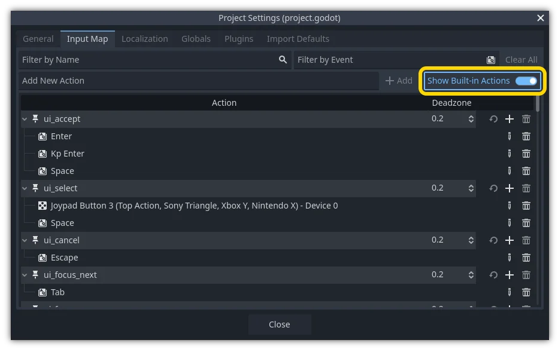

Input examples
Introduction
In this tutorial, you'll learn how to use Godot's InputEvent system to capture player input. There are many different types of input your game may use - keyboard, gamepad, mouse, etc. - and many different ways to turn those inputs into actions in your game. This document will show you some of the most common scenarios, which you can use as starting points for your own projects.
Note
For a detailed overview of how Godot's input event system works, see Using InputEvent.
Events versus polling
Sometimes you want your game to respond to a certain input event - pressing
the "jump" button, for example. For other situations, you might want something
to happen as long as a key is pressed, such as movement. In the first case,
you can use the _input() function, which will be called whenever an input
event occurs. In the second case, Godot provides the Input
singleton, which you can use to query the state of an input.
Examples:
func _input(event):
if event.is_action_pressed("jump"):
jump()
func _physics_process(delta):
if Input.is_action_pressed("move_right"):
# Move as long as the key/button is pressed.
position.x += speed * delta
public override void _Input(InputEvent @event)
{
if (@event.IsActionPressed("jump"))
{
Jump();
}
}
public override void _PhysicsProcess(double delta)
{
if (Input.IsActionPressed("move_right"))
{
// Move as long as the key/button is pressed.
position.X += speed * (float)delta;
}
}
This gives you the flexibility to mix-and-match the type of input processing you do.
For the remainder of this tutorial, we'll focus on capturing individual
events in _input().
Input events
Input events are objects that inherit from InputEvent. Depending on the event type, the object will contain specific properties related to that event. To see what events actually look like, add a Node and attach the following script:
extends Node
func _input(event):
print(event.as_text())
using Godot;
public partial class Node : Godot.Node
{
public override void _Input(InputEvent @event)
{
GD.Print(@event.AsText());
}
}
As you press keys, move the mouse, and perform other inputs, you'll see each event scroll by in the output window. Here's an example of the output:
A
Mouse motion at position ((971, 5)) with velocity ((0, 0))
Right Mouse Button
Mouse motion at position ((870, 243)) with velocity ((0.454937, -0.454937))
Left Mouse Button
Mouse Wheel Up
A
B
Shift
Alt+Shift
Alt
Shift+T
Mouse motion at position ((868, 242)) with velocity ((-2.134768, 2.134768))
As you can see, the results are very different for the different types of input. Key events are even printed as their key symbols. For example, let's consider InputEventMouseButton. It inherits from the following classes:
InputEvent - the base class for all input events
InputEventWithModifiers - adds the ability to check if modifiers are pressed, such as Shift or Alt.
InputEventMouse - adds mouse event properties, such as
positionInputEventMouseButton - contains the index of the button that was pressed, whether it was a double-click, etc.
Tip
It's a good idea to keep the class reference open while you're working with events so you can check the event type's available properties and methods.
You can encounter errors if you try to access a property on an input type that
doesn't contain it - calling position on InputEventKey for example. To
avoid this, make sure to test the event type first:
func _input(event):
if event is InputEventMouseButton:
print("mouse button event at ", event.position)
public override void _Input(InputEvent @event)
{
if (@event is InputEventMouseButton mouseEvent)
{
GD.Print("mouse button event at ", mouseEvent.Position);
}
}
InputMap
The InputMap is the most flexible way to handle a variety of inputs. You use this by creating named input actions, to which you can assign any number of input events, such as keypresses or mouse clicks. To see them, and to add your own, open Project -> Project Settings and select the InputMap tab:

Tip
A new Godot project includes a number of default actions already defined. To see them, turn on in the InputMap dialog.
While not strictly required, it's recommended to use the snake_case naming
convention for input action names.
Capturing actions
Once you've defined your actions, you can process them in your scripts using
is_action_pressed() and is_action_released() by passing the name of
the action you're looking for:
func _input(event):
if event.is_action_pressed("my_action"):
print("my_action occurred!")
public override void _Input(InputEvent @event)
{
if (@event.IsActionPressed("my_action"))
{
GD.Print("my_action occurred!");
}
}
Keyboard events
Keyboard events are captured in InputEventKey. While it's recommended to use input actions instead, there may be cases where you want to specifically look at key events. For this example, let's check for the T:
func _input(event):
if event is InputEventKey and event.pressed:
if event.keycode == KEY_T:
print("T was pressed")
public override void _Input(InputEvent @event)
{
if (@event is InputEventKey keyEvent && keyEvent.Pressed)
{
if (keyEvent.Keycode == Key.T)
{
GD.Print("T was pressed");
}
}
}
Tip
See @GlobalScope_Key for a list of keycode constants.
Warning
Due to keyboard ghosting, not all key inputs may be registered at a given time if you press too many keys at once. Due to their location on the keyboard, certain keys are more prone to ghosting than others. Some keyboards feature antighosting at a hardware level, but this feature is generally not present on low-end keyboards and laptop keyboards.
As a result, it's recommended to use a default keyboard layout that is designed to work well on a keyboard without antighosting. See this Gamedev Stack Exchange question for more information.
Keyboard modifiers
Modifier properties are inherited from InputEventWithModifiers. This allows you to check for modifier combinations using boolean properties. Let's imagine you want one thing to happen when the T is pressed, but something different when it's Shift + T:
func _input(event):
if event is InputEventKey and event.pressed:
if event.keycode == KEY_T:
if event.shift_pressed:
print("Shift+T was pressed")
else:
print("T was pressed")
public override void _Input(InputEvent @event)
{
if (@event is InputEventKey keyEvent && keyEvent.Pressed)
{
switch (keyEvent.Keycode)
{
case Key.T:
GD.Print(keyEvent.ShiftPressed ? "Shift+T was pressed" : "T was pressed");
break;
}
}
}
Tip
See @GlobalScope_Key for a list of keycode constants.
Mouse events
Mouse events stem from the InputEventMouse class, and
are separated into two types: InputEventMouseButton
and InputEventMouseMotion. Note that this
means that all mouse events will contain a position property.
Mouse motion
InputEventMouseMotion events occur whenever
the mouse moves. You can find the move's distance with the relative
property.
Here's an example using mouse events to drag-and-drop a Sprite2D node:
extends Node
var dragging = false
var click_radius = 32 # Size of the sprite.
func _input(event):
if event is InputEventMouseButton and event.button_index == MOUSE_BUTTON_LEFT:
if (event.position - $Sprite2D.position).length() < click_radius:
# Start dragging if the click is on the sprite.
if not dragging and event.pressed:
dragging = true
# Stop dragging if the button is released.
if dragging and not event.pressed:
dragging = false
if event is InputEventMouseMotion and dragging:
# While dragging, move the sprite with the mouse.
$Sprite2D.position = event.position
using Godot;
public partial class MyNode2D : Node2D
{
private bool _dragging = false;
private int _clickRadius = 32; // Size of the sprite.
public override void _Input(InputEvent @event)
{
Sprite2D sprite = GetNodeOrNull<Sprite2D>("Sprite2D");
if (sprite == null)
{
return; // No suitable node was found.
}
if (@event is InputEventMouseButton mouseEvent && mouseEvent.ButtonIndex == MouseButton.Left)
{
if ((mouseEvent.Position - sprite.Position).Length() < _clickRadius)
{
// Start dragging if the click is on the sprite.
if (!_dragging && mouseEvent.Pressed)
{
_dragging = true;
}
}
// Stop dragging if the button is released.
if (_dragging && !mouseEvent.Pressed)
{
_dragging = false;
}
}
else
{
if (@event is InputEventMouseMotion motionEvent && _dragging)
{
// While dragging, move the sprite with the mouse.
sprite.Position = motionEvent.Position;
}
}
}
}
Touch events
If you are using a touchscreen device, you can generate touch events. InputEventScreenTouch is equivalent to a mouse click event, and InputEventScreenDrag works much the same as mouse motion.
Tip
To test your touch events on a non-touchscreen device, open Project Settings and go to the "Input Devices/Pointing" section. Enable "Emulate Touch From Mouse" and your project will interpret mouse clicks and motion as touch events.